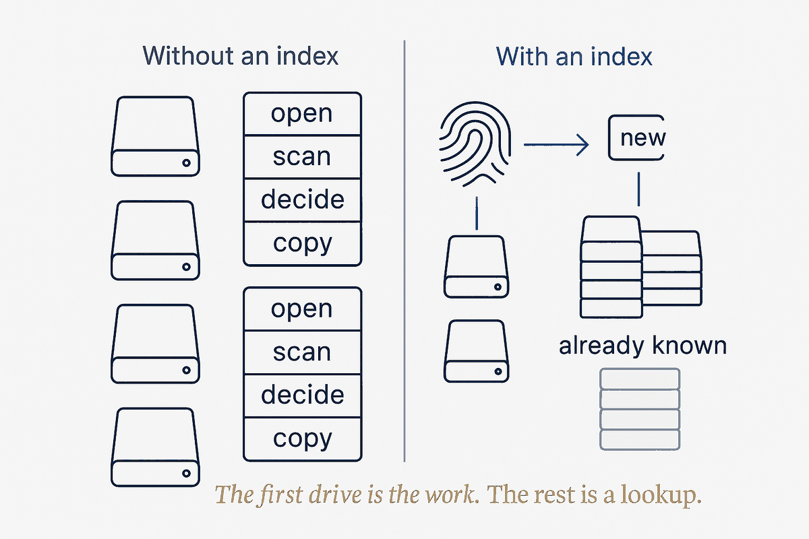
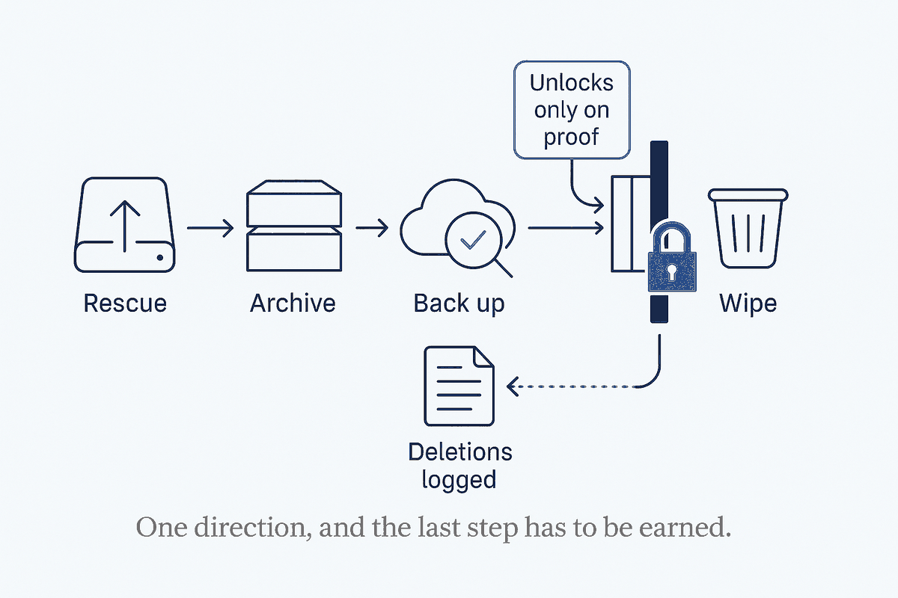

The drawer everyone has
Somewhere you have it too: a drawer, a shoebox, a shelf of old hard drives and SSDs. The laptop drive from two machines ago. The external you bought for "backups" in 2013. The one you're fairly sure has the only copy of some photos on it, which is exactly why you've never dared throw it out.
I have eight of them. And the honest reason they sat untouched for years isn't laziness — it's that clearing an old drive is genuinely three hard questions stacked on top of each other. What's even on it? What's worth keeping? And is it safe to destroy? Get the last one wrong and the mistake is permanent. So the whole pile stays in the drawer, quietly, as a low-grade guilt.
The instinct, when you finally start, is to grab one drive and grind through it. Copy some folders, delete some junk, wipe it, move to the next. I did exactly that for the first one. Then I noticed the trap.
The trap: every drive is mostly the last drive
The second drive I opened was a data disk from my consulting years. Buried in it: a 100 GB photo archive going back to 1971, a pile of old project folders — and a lot of it I had already seen on the first drive. The same client work. The same digitised family photos. The same downloads folder, copied forward from machine to machine across a decade, because that's what we all do when we upgrade: drag the old drive's contents onto the new one and never look back.
This is the thing nobody tells you about old drives. The work isn't eight separate jobs. It's the same data, smeared across eight disks in overlapping, slightly-different piles. Clear them one at a time and you review the same photo library four times, copy it four times, and second-guess the same "is this the only copy?" four times. The effort doesn't shrink as you go. It repeats.
That's the signature of a job that's begging to be a system instead of a chore. So I stopped, and built two small things.
Thing one: an index that remembers what's already safe
The first is an index — a running list of everything I've already rescued, identified not by filename (filenames lie; the same photo gets renamed a dozen times) but by content. Every file that lands in my archive gets fingerprinted by its actual bytes. The index is just that growing list of fingerprints.
Now the job inverts. When I dock a new drive, I don't review it — I compare it against the index. The question stops being "what's on this disk?" and becomes "what's on this disk that I don't already have somewhere safe?" And the answer, drive after drive, is most of it is already handled. A disk with sixty thousand files resolves to a report that says: fifty-seven thousand of these are already archived, here are the three thousand that are new. Review those. Ignore the rest.
The consequence is the part I find genuinely satisfying: each drive makes the next one cheaper. The more I archive, the more the index knows, the less any future disk can surprise me. The first drive was slow because the index was empty. The eighth will be nearly free, because by then almost everything on it will already be a known quantity. The pile shrinks and the system compounds at the same time — which is the whole compounding-brain idea applied to a shoebox of hardware.

Why fingerprints, not filenames — and a subtlety about photos
It matters that the index works on content, not names, and it's worth being precise about why, because there's a subtlety that trips people up.
Two files are true duplicates only if their bytes are identical. An exact copy of a photo — the same file dragged from an old drive — is a perfect match, and the index skips it instantly. But the same picture re-exported by different software, resized, rotated, or with its date-tag fixed, is a different file even though it looks identical to you. Same photo, different bytes. A content index catches the first kind cleanly and, deliberately, does not pretend the second kind is a match — because at the byte level, it isn't.
That's not a flaw; it's honesty about what layer you're working at. Exact-duplicate detection is cheap, certain, and safe to automate. "Same picture, re-encoded" is a fuzzier, human-judgement problem that deserves its own separate pass — one that compares images as images, not as bytes. Collapsing the two would either miss real duplicates or, worse, wrongly delete a photo that only looked like one you already had. The system keeps them apart on purpose: automate the certain thing, flag the uncertain thing for later.
Thing two: a gate that won't let me destroy too early
The index handles what to keep. The second thing handles the question that actually kept the drawer full for years: when is it safe to wipe?
Here the rule is one line, and it is absolute: nothing gets destroyed until its data is verified safe somewhere else. Not "copied" — verified. On the drive I mentioned, the rescued files were moved off, into my archive, which meant for a window of time that archive was the only copy in existence. Wiping the source in that window would be trusting a copy I hadn't confirmed. So the gate holds: the archive gets backed up to offsite storage, I confirm the backup actually contains the files — actually list them, in the actual snapshot — and only then does the wipe get a green light.
This sounds like paranoia until you remember the asymmetry. Keeping a drive an extra day costs nothing. Wiping it one day too early costs everything on it, forever. When one side of a decision is "mild inconvenience" and the other is "irreversible loss," you don't balance them — you build a gate that makes the irreversible thing impossible until the safe thing is proven.
And when I do delete, the deletions get written down. Every folder I chose not to keep — the obsolete virtual machines, the re-downloadable installers, the music I have elsewhere — goes into a small "not archived" log next to the drive's record, with the reason. Not because I'll re-read it often, but because "where did that go?" deserves an answer that isn't a shrug. Deliberate deletion, written down, is a different act from just hitting delete and hoping.

The drive's last decision: sell, donate, or recycle
There's a small coda to each drive, and it's more structured than it looks. Once the data is safe and the disk is wiped, it has one last fork: is it worth selling, worth donating, or bound for the recycling centre?
That's not a vibe; it's a rule based on two facts — the drive's health and its resale reality. A drive reporting even a single failing sector never gets sold or donated, full stop; a flaky disk passed to someone else is a small betrayal waiting to happen. A healthy but ancient small drive isn't worth the friction of selling — nobody wants a 320 GB spinning disk when a new SSD costs less than a lunch — so it goes to the thrift store to be reused. A healthy modern SSD holds enough value to be worth wiping properly and selling on. Same three-way decision every time, decided by the same two questions, written into the runbook so I never re-litigate it drive by drive.
Even the wipe itself splits by type, and it's the kind of detail that a system captures and a memory forgets: a spinning drive you overwrite end to end; a solid-state drive you don't — you use its built-in secure-erase instead, because overwriting an SSD is both slower and less thorough. Encode that once, in the runbook, and it's correct forever. Rely on remembering it, and eventually you'll do it wrong at 1 a.m.
What this is really about
I could have cleared eight drives with brute force. Plenty of people do — a weekend, a lot of dragging folders, a few held breaths at the wipe step, and a nagging sense you probably deleted something you'll miss. It works, roughly, once.
Building the small system instead cost me more on the first drive and less on every drive after — and it turned a job I dreaded into one I can actually finish, because the finish line gets closer with each disk instead of staying the same distance away. The index means I never review the same data twice. The gate means I never destroy something I haven't proven is safe. The runbook means the fiddly decisions — health, disposal, how to wipe which kind of disk — are made once and reused, not re-derived under fatigue.
That's the whole thesis, in a domain nobody thinks of as a knowledge system: the pile is effort, the system is structure, and structure is what makes the pile actually shrink. A shoebox of old drives isn't a glamorous place to prove it. It might be the most convincing one.
The honest limit
Two caveats, because "build a system for everything" is the wrong lesson.
First, the system only pays off because there are eight drives. For a single stray disk, the index and the gate are overkill — you'd copy what matters, verify it once, and be done. The compounding only compounds when there's a pile; the tell that a chore deserves a system is repetition, and one drive doesn't repeat. Match the machinery to the volume.
Second, the gate is worth its weight precisely because I keep it rigid. The temptation, three drives in and moving fast, is to skip the verify step "just this once" because the backup surely worked. That's exactly when it bites. A safety gate you bypass when you're in a hurry isn't a gate — it's a suggestion. The value isn't in having the rule; it's in never being the one who overrides it. So I don't. Not even at 1 a.m., eight drives deep, with the dock humming and the drawer finally almost empty.